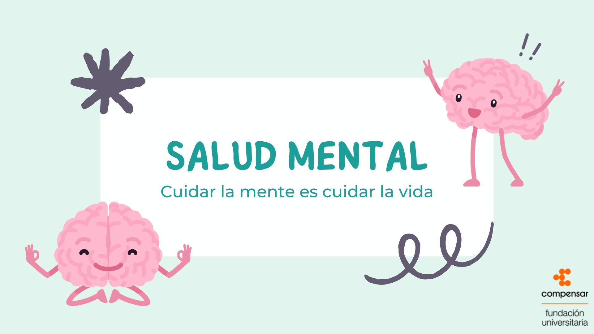
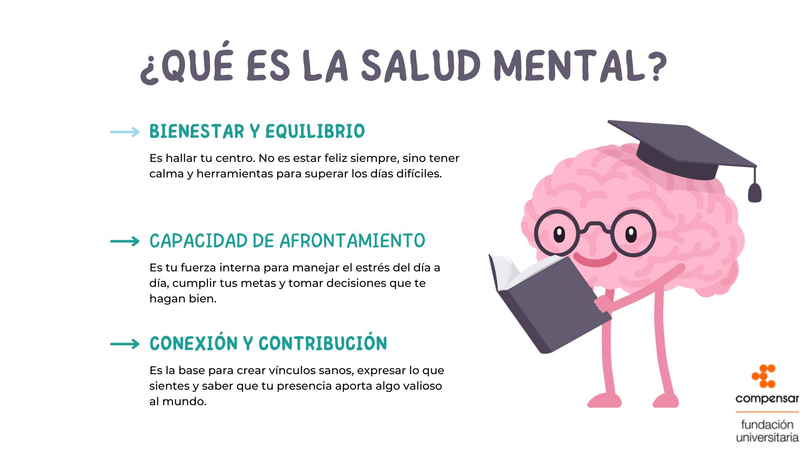
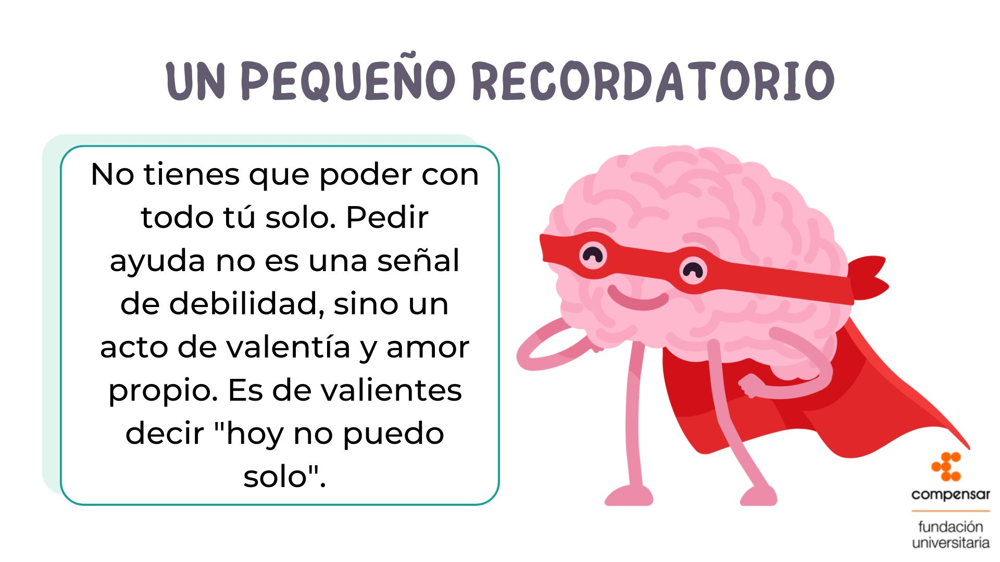
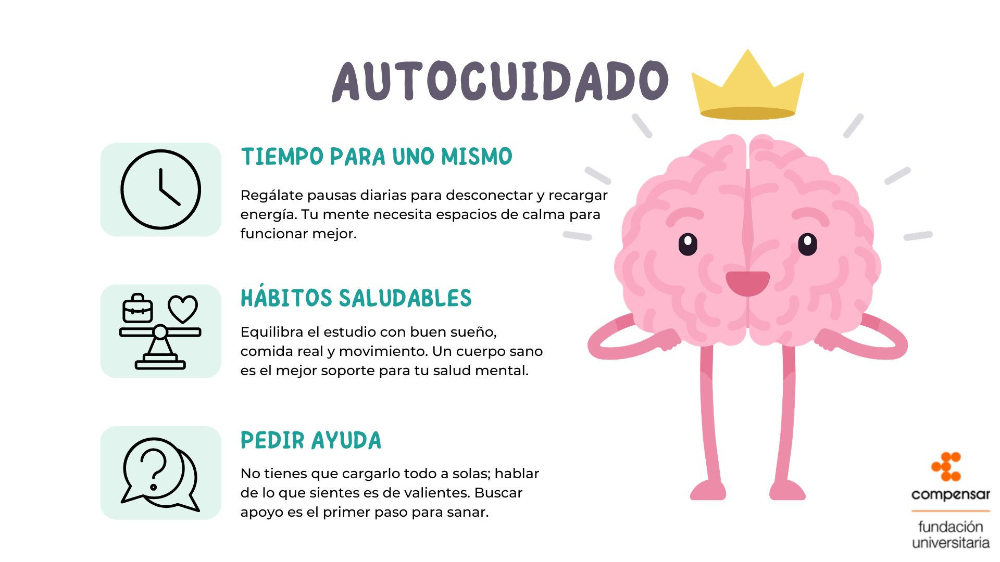
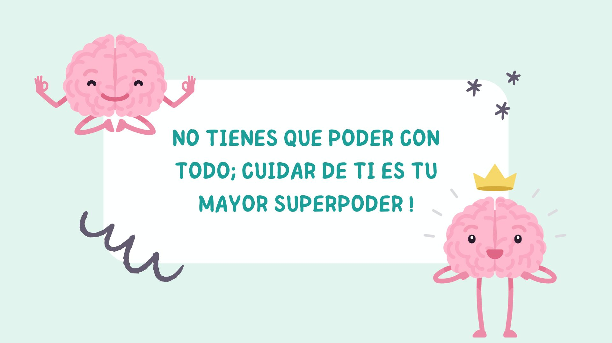

Habla con un terapeuta certificado hoy mismo y empieza a sentirte mejor.
Consulta con un especialista en línea y recibe la ayuda que necesitas.
Habla en cualquier momento con Armonia y encuentra apoyo solo para ti
Únete a grupos de apoyo para compartir y recibir apoyo emocional.
Accede a meditaciones, ejercicios de respiración y guías de bienestar.
Selecciona un profesional y contáctalo directamente.




